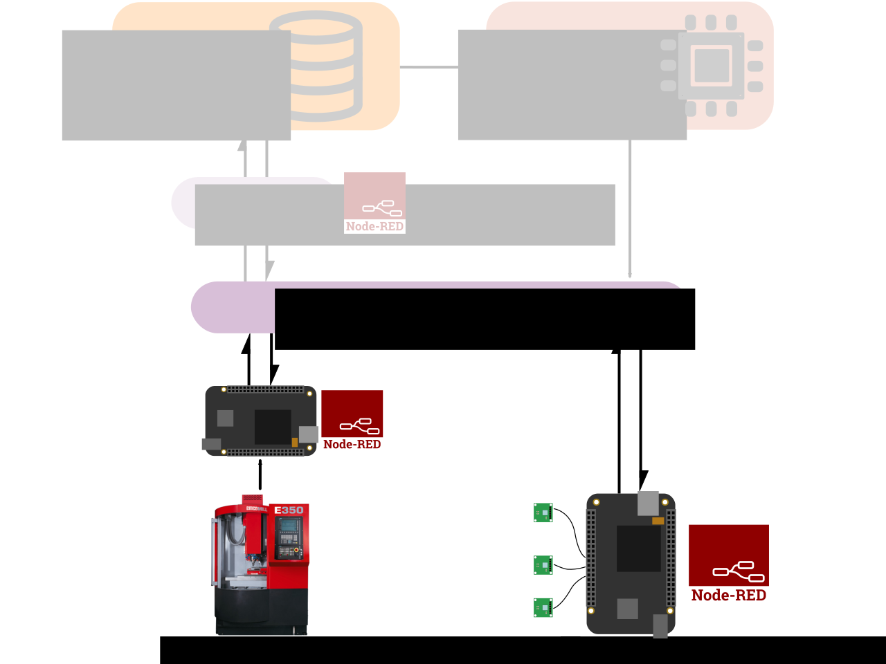
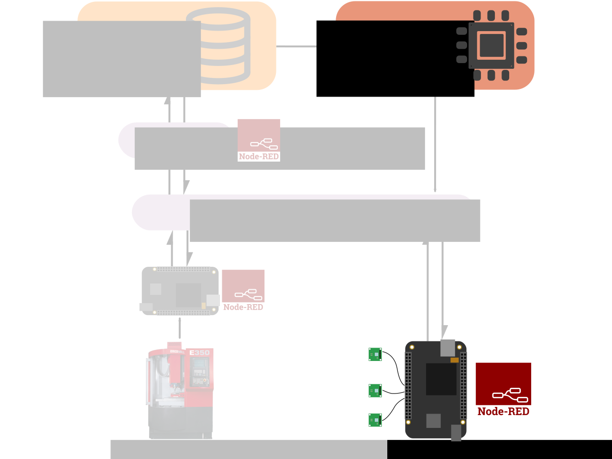
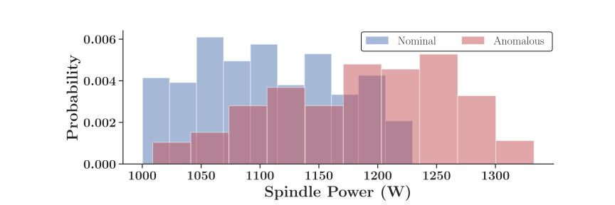
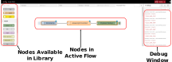
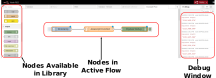

Bayesian Edge Analytics of Manufacturing Process and Health Status in an IoT Framework
July 7th 2020
Daniel NewmanDepartment of Mechanical Engineering
Georia Institute of Technology
danielnewman@gatech.edu
www.danielmnewman.com/Dissertation
https://www.github.com/danielnewman09/Dissertation
The Past Decade

Sensor/Controller Integration
- Bidirectional communication facilitates:
- Sample triggering
- Sensor contextualization
- Standardized message structure
Consistent ML Framework
- Perform training remotely
- Deploy trained models to the edge for inference
- "Close the loop"
CNC Controller Protocols
- Modern CNC machines utilize communications protocols to share operational information
- Two protocols considered:
- MTConnect
- OPC-UA
- With the Internet of Things, machine data availability has greatly increased
Sensor Data Acquisition

- IoT-compatible sensor data acquisition is an unsolved issue
- Two types of equipment are typically available:
- High-voltage, high-precision, proprietary DAQ
- Low-voltage, open-source DAQ
Health Monitoring

Time-Domain Statistics
\begin{equation}
M^{k} = \frac{1}{n} \sum\limits_{i=1}^n X_i^k
\end{equation}
\begin{equation}
\sigma^2 = \frac{1}{(n-1)} \sum\limits_{i=1}^n (X_i-\bar{X})^2
\end{equation}
\begin{equation}
\mathrm{Skew} = \frac{M^{3}}{\sigma^3}
\end{equation}
\begin{equation}
\mathrm{Kurtosis} = \frac{M^{4}}{\sigma^4}
\end{equation}
Spectral Power Approximation
\begin{equation}
X[n] = \sum_{k=0}^{N-1} x[k] e^{-j \frac{2 \pi}{N} n k}
\end{equation}
\begin{equation}
\begin{bmatrix}
X_1\\
X_2\\
X_3\\
\vdots\\
X_{N}
\end{bmatrix}=
\begin{bmatrix}
W^{0} & W^{0} & W^{0} & \dots & W^{0} \\
W^{0} & W^{1} & W^{2} & \dots & W^{N-1} \\
W^{0} & W^{2} & W^{4} & \dots & W^{2(N-1)} \\
\vdots \\
W^{0} & W^{N-1} & W^{2(N-1)} & \dots & W^{(N-1)^2} \\
\end{bmatrix}
\begin{bmatrix}
x_1\\
x_2\\
x_3\\
\vdots\\
x_{N}
\end{bmatrix}
\end{equation}
Example Data
Controller vs Sensor Test

- Compare process data from worn and unworn tools
- Use spindle power from CNC controller
- Compare with accelerometer measurements
- Given the advanced wear, data should show obvious distinction between tools
Controller vs Sensor Results

MQTT Message Definitions


Open-Source Components
 

Warmup Program